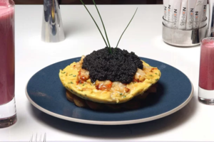
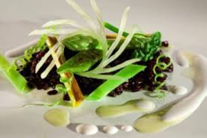
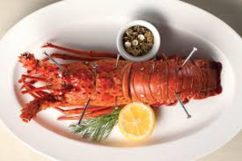

inicio
pratos
quem somos?
caviar

caviar é um alimento, considerado uma
iguaria de luxo, consistindo em ovas de esturjão não-fertilizadas, sem qualquer tipo de aditivo, corante ou preservante.
Foie gras.

O foie gras é o fígado de aves aquáticas, entretanto, não é um fígado normal, é um fígado com esteatose hepática
LAGOSTA

As lagostas são crustáceos da família Nephropidae e da mesma ordem dos caranguejos e siris (Decapoda). Diferente destes